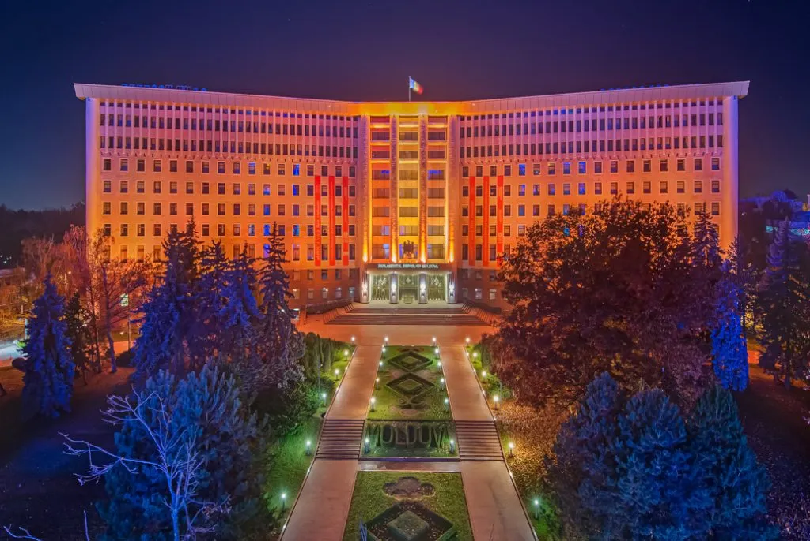
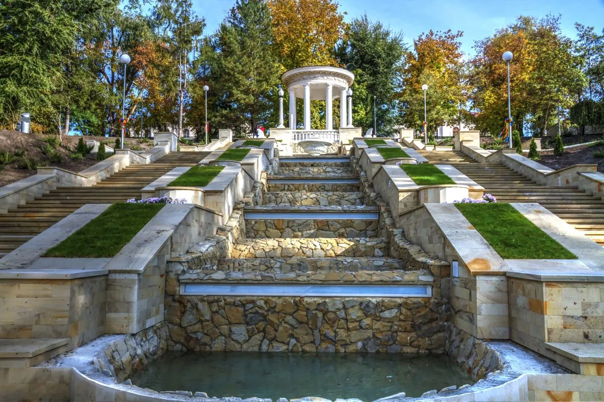
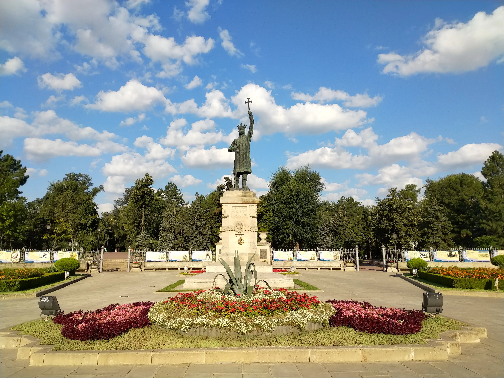
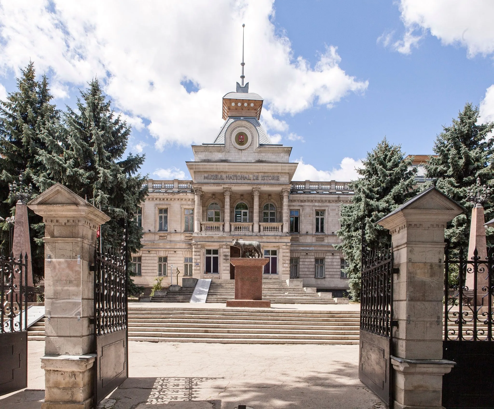
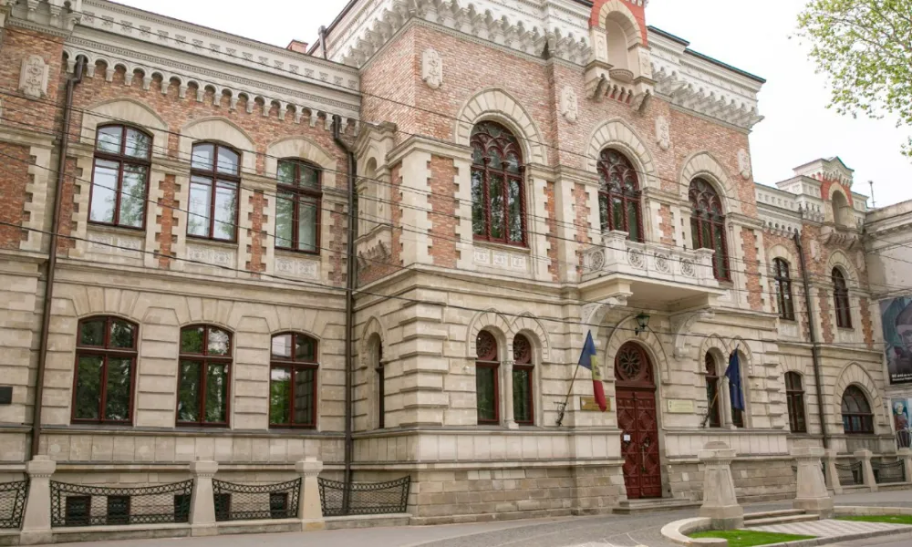
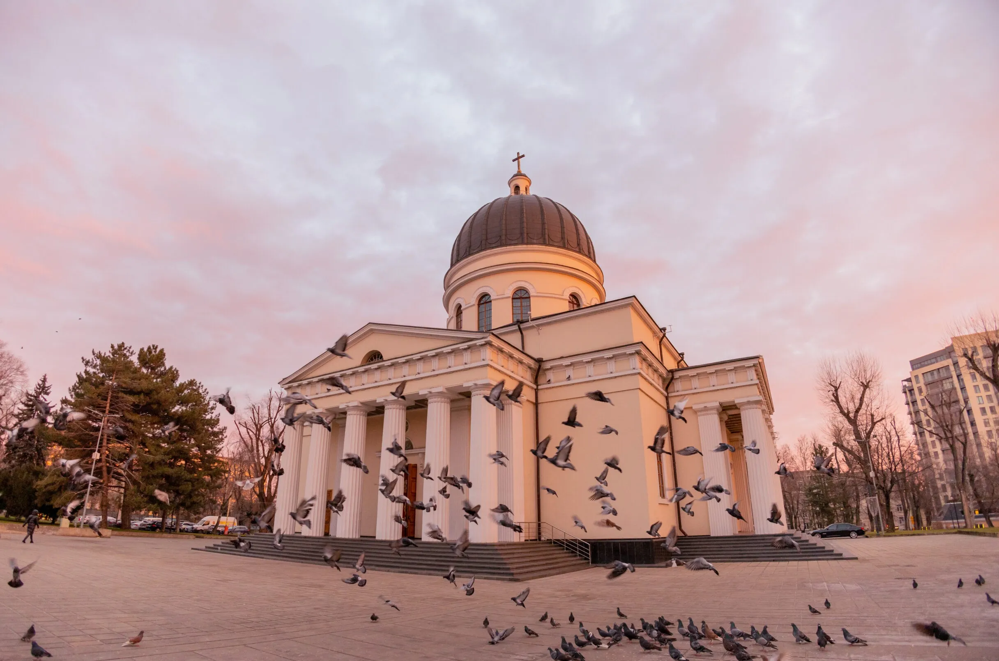
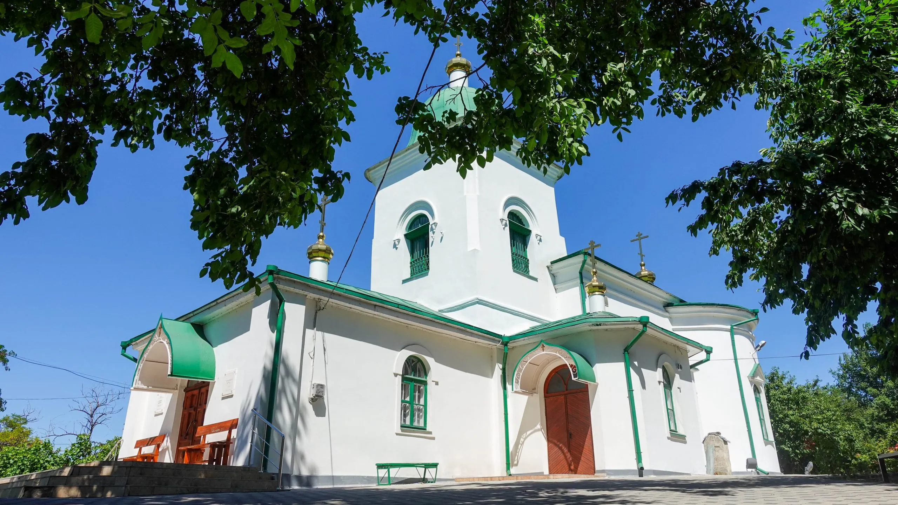

Chișinăul este un oraș metropolitan și capitala Moldovei și este bogat în moșteniri culturale variate.
Chișinăul găzduiește câteva muzee istorice renumite, biserici vechi, parcuri verzi luxuriante și localuri
culinare încântătoare. Delicatesele alimentare și vinurile de la Chișinău sunt unele dintre cele mai discutate
lucruri din întreaga Europă și reprezintă un factor major de atragere a turiștilor.
Localnicii acestui loc sunt atât de primitori încât oricând ați dori să veniți din nou.
Numit și „Porțile Sfinte”, iar sub regimul sovietic „Arcul Victoriei”, Arcul de Triumf din Chișinău reprezintă
un monument de arhitectură comemorativ al biruințelor armatei rusești în fața trupelor otomane în războiul
dintre 1806-1812.
Aflat pe bd. Ștefan cel Mare și Sfânt, arcul face parte dintr-un ansamblu arhitectural care unește printr-o axă de
simetrie Catedrala Nașterii Domnului și clopotnița acesteia, Piața Marii Adunări Naționale și Casa Guvernului din
Chișinău.
Construit în 1841 după proiectul arhitectului-șef Luca Zaușkevici, ca bază fiind luat proiectul Arcului de Triumf
din Roma, monumentul are în plan formă de pătrat, cu structuri arhitecturale ce se îmbină armonios, și o înălțime
de 13 m.
Primul nivel, reprezentat de cei 4 piloni, este sculptat în stil corintic, iar nivelul superior este decorat în
stil clasic, având montat pe partea frontală un orologiu mecanic, luminat pe timp de noapte. În interiorul arcului
se află un clopot care a fost turnat din metalul tunurilor turcești capturate în război.
Parlamentul Republicii Moldova

Parlamentul Republicii Moldova
Arhitectura Palatului Parlamentului din Chișinau este foarte deosebită și interesantă. Clădirea are forma unei carți
deschise iar în centru, unde „foile cărții” se unesc, sunt patru piloni care au aceeași înalțime ca și clădirea.
Clădirea Parlamentului Republicii Moldova a fost ridicată în anii 70, la început avănd ca scop deservirea Comitetului
Central al Partidului Comunist al RSSM.
Pe soclul clădirii sunt plite din granit roșu, suprafețele zidurilor fiind acoperite cu plite de piatră roz.
Cabinetele de lucru, în interior, sunt așezate într-o singură aripă a clădirii, iar sala de ședinte a Parlamentului
se află în partea opusă.
Palatul Parlamentului este un monument de importanță națională.
Parcuri
Parcul „Valea Morilor”

Parcul „Valea Morilor”
Parcul „Valea Morilor” și lacul din această zonă au fost construite în anul 1952, la cerința lui Leonid Brezhnev,
pe o suprafață de 102 hectare. Peisajul este superb, deoarece parcul dispune de o suprafață cu un relief interesant
și neobișnuit. Parcul are 4 intrări și dispune de o floră superbă.
În parc se găsesc Cinematograful „De Zi”, Teatrul de vară cu 5.000 de locuri, Pavilionul de șah și joc de dame,
Orășelul pentru copii „Andrieș”. Astfel, parcul este de profil larg, oricine poate veni aici să se bucure de peisaj,
de liniște si de natură, să se recreeze sau să faca plajă.
Aici se poate admira și Monumentul polițiștilor căzuți la datorie, Scara Cascadelor, Centrul cultural american
(care se află chiar la intrarea în parc și în fața căruia se află Monumentul Doina și Ion Aldea-Teodorovici).
În incinta parcului se gasește și o cafenea, iar lânga Orășelul copiilor se poate admira sculptura „Urșii”.
Turnul pentru parașutism din acest parc este ideal pentru iubitorii de sporturi extreme.
Oricine găsește o activitate în această zonă, indiferent de vârstă și preferință.
Grădină Publică Ștefan cel Mare și Sfânt

Grădină Publică Ștefan cel Mare și Sfânt
Grădina Publică Ștefan cel Mare și Sfânt din Chișinău este cel mai vechi parc realizat și construit într-o modalitate
clasică. Amenajarea acestuia sub formă de grădină publică s-a terminat în anul 1835. Aici au fost plantați diferiți
arbori și arbuști și 1000 de salcâmi, ceea ce face ca peisajul să fie desprins din basme.
În parc se găsesc două fântâni arteziene, spațiu de joacă pentru copii și spații de recreere. Tot aici este monumentul
lui Aleksandr Pușkin și cel a lui Ștefan cel Mare. În Grădină Publică Ștefan cel Mare și Sfânt se află Aleea Clasicilor,
cu 12 busturi ale clasicilor din literatura românească.
Oaza de verdeață din centrul orașului, grădina publică, este un loc ideal pentru plimbări, întâlniri sau pentru odihnă.
Grădina are 7 intrări, iar intrarea principală este păzită de doi stâlpi din piatră albă, care se află în spatele
monumentului lui Ștefan cel Mare.
Ceea ce este interesant în această grădină este faptul că se găsesc copaci foarte vechi care ajung până la vârsta de 170
de ani. Totodată, este unul dintre cele mai vechi modele de arhitectură peisagistică din Republica Moldova.
În acest parc au loc tot felul de evenimente organizate de locuitorii din Chișinău.
Muzee
Muzeul Național de Istorie a Moldovei

Muzeul Național de Istorie a Moldovei
Inaugurat în anul 1987, Muzeul Național de Istorie a Moldovei din Chișinau are în arhiva sa 263 de mii de
exponate, dintre care mai mult de jumătate sunt piese originale din patrimoniul național.
Muzeul cuprinde colecția de arheologie, colecția de istorie, colecția de arme și armuri și colecția
numismatică (monede).
Colecția de arheologie cuprinde obiecte ce provin din săpături arheologice, achiziții sau transferuri precum:
unelte din piatră cioplite și șlefuite, din os, cupru și bronz, ceramică pictată, arme, vase și ustensile casnice
sau obiecte de podoabă.
Colecția de istorie cuprinde obiecte cu totul și cu totul deosebite care creează atmosfera în care au trăit
personalități culturale, politice și istorice din Republica Moldova. Din colecție fac parte următoarele obiecte:
instrumente muzicale, mobilier ce reprezintă mai multe stiluri artistice, obiecte memoriale sau harți și planuri.
Deosebită este și colecția de arme ce conține piese de armament occidentale, orientale și rusești din secolele
XVI-XX. Aici se pot admira toate tipurile de arme albe și de foc, armuri, coifuri.
Muzeul Național de Artă al Moldovei

Muzeul Național de Artă al Moldovei
Muzeul Național de Artă al Moldovei a fost fondat în anul 1939 și, deși colecțiile s-au pierdut în timpul
războiului, a fost reînființat în 1944. Pe o suprafață de 800 de metri pătrați, operele sunt structurate
în 5 secții: artă medievală și creație populară, artă moldovenească, artă rusă, vest-europeană și orientală,
scenografie și artă decorativ-aplicativă.
Muzeul enumeră 44.000 de exponate în diferite colecții precum: colecția de pictură moldovnească, de artă antică,
de artă medievală, de grafică moldovenească, sculptură sau artă decorativă. De asemenea mai include și colecții
rusești de grafică, sculptură sau artă decorativă, colecția de numistică și medalistică.
Expoziția permanentă „Artă națională și universală” din cadrul muzeului este compusă din cele mai reprezentative
opere din patrimoniul muzeului. De asemenea colecția de artă medievală cuprinde cărți vechi, icoane sau obiecte
bisericești specifice acestei zone plină de tradiție și cultură.
Clădirea a fost construită din piatră albă și cărămidă roșie de către pictorul și sculptorul Alexandru Plămădeală
și alți artistici plastici moldoveni.
Biserici
Catedrala Mitropolitană „Nașterea Domnului”

Catedrala Mitropolitană „Nașterea Domnului”
Catedrala Mitropolitană „Nașterea Domnului” este o catedrală ortodoxă din Chișinău ce se află în apropierea pieței
Marii Adunări Naționale și aparține Bisericii Ortodoxe din Moldova.
Clădirea catedralei este un monument de arhitectură de însemnătate națională, introdus în Registrul monumentelor de
istorie și cultură a municipiului Chișinău la inițiativa Academiei de Științe.
Catedrala „Nașterea Domnului” a fost construită după proiectul arhitectului Avraam Melnikov. Aceasta este construită
din piatră și cărămidă și are trei altare. Primul altar, fiind cel principal, are hramul Nașterea Maicii Domnului.
Al doilea și al treilea altar sunt laterale, cel din dreapta are hramul Sfântul Ștefan cel Mare și cel din stânga are
hramul Adormirea Maicii Domnului.
Primul post de radio din Chișinău, Radio Basarabia, a fost inaugurat oficial prin transmiterea liturghiei de la
Catedrala Mitropolitană pe 8 octombrie 1939.
Biserica Măzărache

Biserica Măzărache
Cel mai vechi edificiu (inclusiv ecleziastic) care s-a păstrat până în prezent pe teritoriul Chișinăului actual,
și singurul care păstrează arhitectura medievală moldovenească. Biserica Măzărache este atestată documentar în anul
1752 (anul sfințirii). Este numită în popor după numele ctitorului său - boierul, negustorul și pârcălabul de Chișinău
Vasile Măzărache.
În jurul bisericii se află şi cea mai veche necropolă a capitalei, datată cu secolele XV-XVI, iar pe aceeaşi colină
au curs renumitele izvoare, de la care, probabil, și își trage numele orașul Chişinău.
În anul 1955, printr-un gest aproape fantastic, autorităţile sovietice au cedat biserica ruşilor de rit vechi
(lipovenilor) în schimbul catedralei lor, care fusese demolată în timpul construcţiei bulevardului Tineretului
(azi b-dul Grigore Vieru).
De atunci, accesul înăuntru în biserică este foarte limitat, oaspeții capitalei pot să viziteze doar ograda bisericii
și acareturile din preajmă, inclusiv și câteva pietre funerare cu inscripții în slavona și moldoveneasca veche.